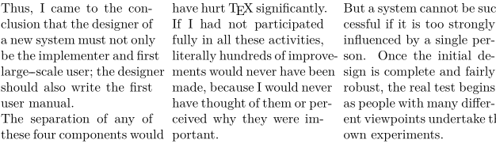
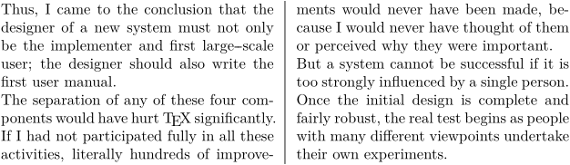
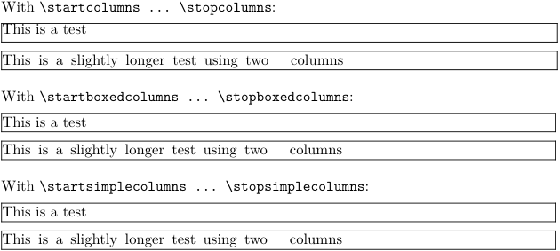
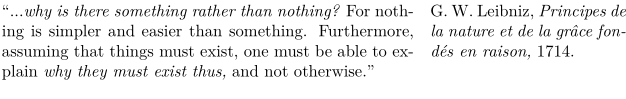
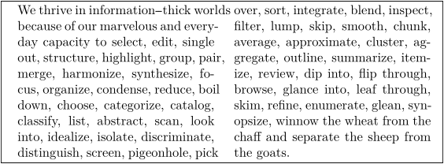
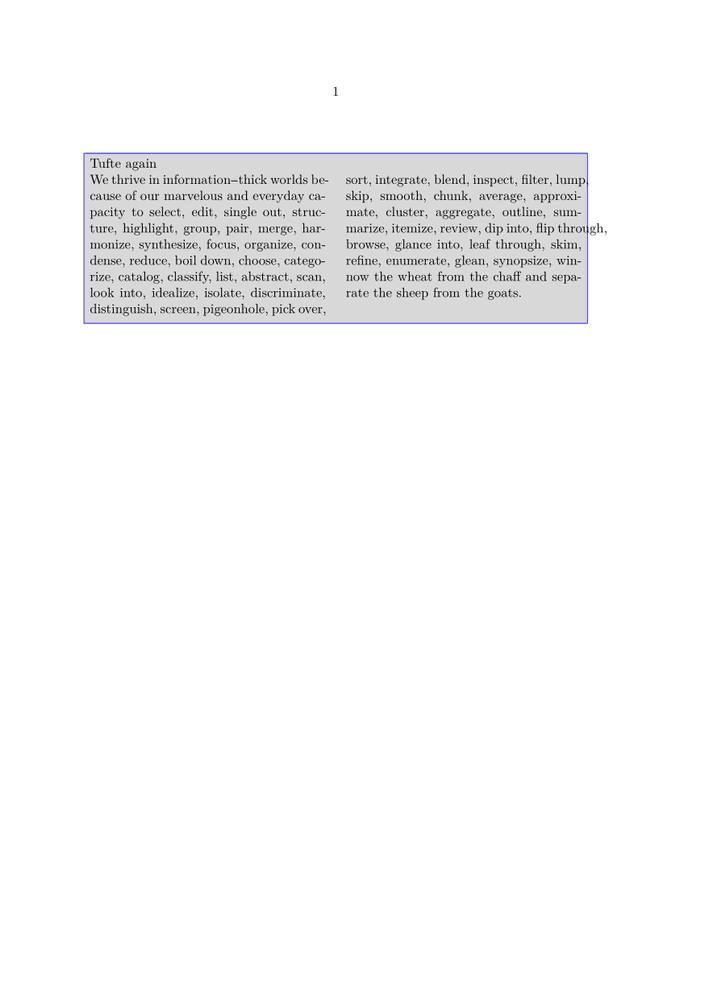
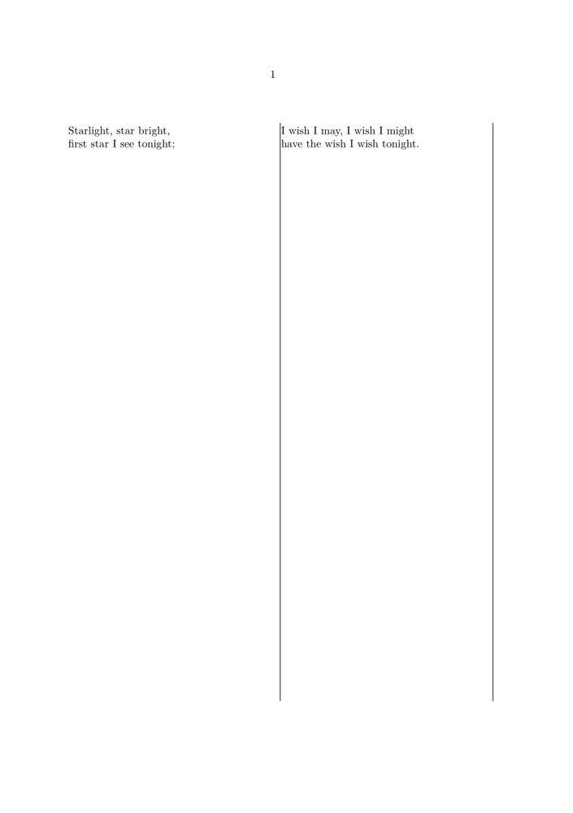

(This page is a mess. The variety of column modes is just confusing. Have a look at the Columnsets manual and the Page Columns manual.)
Contents
Overview
There are different possibilities to typeset text in two or more columns:
- columns : for simple cases of multi column text
- mixed columns : the upgraded MkIV version of columns ("a bit better with balancing and penalties for keeping section heads with the text") with many more configurable options.
- paragraphs : if you need a table-like structure (translations, questionaires etc.)
- column sets : the flexible way for varying columns or other complex tasks
- page columns : new column sets implementation
- streams : set different text synchronized side-by-side (e.g. bilingual editions)
Columns and columnsets are different mechanisms to produce a document with two or more columns of text.
-
The
columnsmechanism is the older one with limited control about the placement of figures but allows you to mix one column and multicolumns text on a page. It remains available in MkIV, but has been superseded for most purposes bymixedcolumns. -
columnsetsare meant for magazine-like layouts with more control about the placement of figures and other features like spanned columns etc. (look at the manual for more).
Additionally, there’s still the old columns and columnsets code available as a module.
Columns
-
\setuppapersize[A5] \startcolumns[n=3] \input knuth \stopcolumns
- 
You can add all the options of \setupcolumns to \startcolumns. For example, simple ruled columns are easy:
-
\setuppapersize[A5] \startcolumns[n=2,separator=rule] % [rule=on] seems to be deprecated \input knuth \stopcolumns
- 
Normally, columns are automatically balanced with the text distributed over the number of requested columns. You can provoke a column switch using \column.
-
\setuppapersize[A5] \startcolumns[n=2] \input ward \column \input weisman \stopcolumns
Column balancing fails in "lines" mode (e.g. for poetry).
Changing the color of the separator rule:
-
\setuppapersize[A5] \startcolumns[n=3,separator=rule,rulecolor=red] \input knuth \stopcolumns
-

Vertical alignment consistency
When using \startcolumns ... \stopcolumns, the vertical alignment may change slightly depending on whether the content fits in a single line of one column or not. A consistent vertical alignment can be obtained using \startboxedcolumns ... \stopboxedcolumns or \startsimplecolumns ... \stopsimplecolumns, as shown in the example below (using a frame to show the difference in alignment).
-
With \type{\startcolumns ... \stopcolumns}: \blank[medium] \startframed[offset=0pt] \startcolumns This is a test \stopcolumns \stopframed \blank[medium] \startframed[offset=0pt] \startcolumns This is a slightly longer test using two columns \stopcolumns \stopframed \blank[big] With \type{\startboxedcolumns ... \stopboxedcolumns}: \blank[medium] \startframed[offset=0pt] \startboxedcolumns This is a test \stopboxedcolumns \stopframed \blank[medium] \startframed[offset=0pt] \startboxedcolumns This is a slightly longer test using two columns \stopboxedcolumns \stopframed \blank[big] With \type{\startsimplecolumns ... \stopsimplecolumns}: \blank[medium] \startframed[offset=0pt] \startsimplecolumns This is a test \stopsimplecolumns \stopframed \blank[medium] \startframed[offset=0pt] \startsimplecolumns This is a slightly longer test using two columns \stopsimplecolumns \stopframed
- 
Paragraphs
Paragraphs are useful in collecting text to be displayed together. For example:
-
\setuppapersize[A5] \defineparagraphs[TwoThird][n=2] % The width of the second paragraph is automatically calculated if unspecified. \setupparagraphs[TwoThird][1][width=.66\textwidth] \startTwoThird \quotation{...{\it why is there something rather than nothing?} For nothing is simpler and easier than something. Furthermore, assuming that things must exist, one must be able to explain {\it why they must exist thus,} and not otherwise.} \nextTwoThird G. W. Leibniz, {\it\fr Principes de la nature et de la grâce fondés en raison,} 1714. \stopTwoThird
- 
See "Paragraphs in Columns" section in the ConTeXt reference manualmanual:contextref.pdf for further details.
(Simple)Columns in a narrow frame
To put multiple columns in a frame, this works:
-
\setuppapersize[A5] \framed[width=0.9\hsize,location=middle]\bgroup \startnarrower[2*middle] \setlocalhsize \hsize\localhsize \startsimplecolumns \input tufte \stopsimplecolumns \stopnarrower \egroup
- 
Another possibility is to use text background around the text.
-
\setuppapersize[A5] \setupcolors[state=start] \definetextbackground [book] [state=start, topoffset=.5ex, location=paragraph, leftoffset=1ex,bottomoffset=1ex] \starttextbackground[book] Tufte again \startcolumns[n=2] \input tufte \stopcolumns \stoptextbackground
- 
Column Sets
An alternative method of typesetting text into columns uses columnsets. This method offers more possibilities than simple columns, in particular in placing floats such as figures and in creating columnspans. See Columnsets manual or column sets source for many examples.
If you don't need much more than the "normal" columns, but e.g. "lines" mode, try this:
-
\setuppapersize[A5] \definecolumnset[TwoColumns][n=2] \starttext \startcolumnset[TwoColumns] \startlines % enforce line breaks Starlight, star bright, first star I see tonight; \stoplines \column \startlines I wish I may, I wish I might have the wish I wish tonight. \stoplines \stopcolumnset \stoptext
For more details (layout grid features, spreads, different column widths etc.) please refer to the manual!
Vertical lines between columnsets (rules)
Sometimes it is required to have a vertical line between the columns of your columnset. This code draws MetaPost lines in the right place:
-
\setuppapersize[A5] \startuseMPgraphic{verticalrule} if CurrentColumn < NOfColumns : draw rightboundary OverlayBox shifted (4mm,0); setbounds currentpicture to OverlayBox enlarged 2.5mm; fi \stopuseMPgraphic \defineoverlay [verticalrule] [\useMPgraphic{verticalrule}] \definecolumnset[TwoColumns][n=2,background=verticalrule] \starttext \startcolumnset[TwoColumns] \startlines % enforce line breaks Starlight, star bright, first star I see tonight; \stoplines \column \startlines I wish I may, I wish I might have the wish I wish tonight. \stoplines \stopcolumnset \stoptext
- 
Page Columns
Page columns are a new implementation of columnsets, intended to replace the old mechanism. Page Columns manual
From the source:
Columnsets are kind of special. They are mostly meant for special products with magazine like properties. They are normally not mixed with single column layouts and not all features of ConTeXt might cooperate well with a mechanism like this. We use the name page grid because (as with other reimplementations of MkII features in MkIV, we need another namespace in order to migrate stepwise. This implementation is not neccessarily better than the previous one but it might be easier to extend it. It should be a bit more efficient.
Streams
From the [announcement mail] by Thomas Schmitz:
We have streams for even and odd pages that can be synchronized at certain points. This is useful for, e.g., typesetting bilingual books: have the original on the even pages, the translation on the odd pages, and synchronize at certain points.
Hans later re-implemented that mechanism in the core. For details see the source.
The module provides a rather low-level interface. Hans suggested some handy shortcuts:
\usemodule[streams] \def\StartCouple{\page\SwitchToNormal} \def\StopCouple {\SwitchToNormal \SynchronizeLeftAndRight \FlushLeftAndRight} \def\Original {\SwitchToNormal\SynchronizeLeftAndRight\SwitchToLeft} \def\Translation{\SwitchToRight} \StartCouple \Original\en Are you sleeping, brother John? \Translation\de Bruder Jakob, schläfst du noch? \StopCouple
So you put the part of your document where synchronization should take place between \StartCouple and \StopCouple. After that , \Original and \Translation switches between even and odd pages.
Beware, streams don’t work in columns and not very good in columnsets.
Examples of MkIV streams
(copied from the source)
\enabletrackers[streams.flushing] \setuplayout[grid=yes] \showgrid \starttext \input tufte \startoutputstream[nl] Wat doen we hier? \enableoutputstream[en] Are you sleeping, brother John?\footnote{xxx} \dorecurse{4}{x \footnote{note \recurselevel}\input tufte \par \pushoutputstream} \enableoutputstream[de] Bruder Jakob, schläfst du noch?\footnote{yyy} \dorecurse{4}{x \footnote{note \recurselevel}\input ward \par \pushoutputstream} \disableoutputstream \stopoutputstream Vader Jacob, slaap je nog?\footnote{zzz} \input tufte \synchronizestreams[en,de,nl] \page \flushoutputstream[en] \input knuth \page \flushoutputstream[de] \input knuth \page \flushoutputstream[nl] \input knuth \stoptext
Posting by Wolfgang to the mailing list (2016-11-27):
\starttext \startoutputstream[one] \setupalign[flushleft] \dorecurse{3}{Line \recurselevel\par}\pushoutputstream \blank \dorecurse{6}{Line \recurselevel\par}\pushoutputstream \blank \dorecurse{4}{Line \recurselevel\par}\pushoutputstream \stopoutputstream \startoutputstream[two] \setupalign[flushright] \dorecurse{5}{Line \recurselevel\par}\pushoutputstream \blank \dorecurse{2}{Line \recurselevel\par}\pushoutputstream \blank \dorecurse{7}{Line \recurselevel\par}\pushoutputstream \stopoutputstream \synchronizestreams[one,two] \startoverlay {\outputstreambox[one]} {\raise2\strutdp\outputstreambox[two]} \stopoverlay \stoptext
(Wolfgang continued:)
The mechanism to create pages/columns for the stream content is missing. You can save text and flush it afterwards but there is no command which places the content side by side (or in columns). Below is a simple example but I had to write the splitter myself.
\starttext \startoutputstream[one] \startcolor[red] \dorecurse{10}{\input knuth\par} \stopcolor \stopoutputstream \startoutputstream[two] \startcolor[green] \dorecurse{10}{\input zapf\par} \stopcolor \stopoutputstream \synchronizestreams[one,two] \setbox\scratchboxone\outputstreambox[one] \setbox\scratchboxtwo\outputstreambox[two] \doloop {\ifvoid\scratchboxone \exitloop \else \setbox\scratchboxfour\vsplit\scratchboxone to \textheight \vbox to \vsize{\box\scratchboxfour\vss}% \setbox\scratchboxfive\vsplit\scratchboxtwo to \textheight \vbox to \vsize{\box\scratchboxfive\vss}% \fi} \stoptext
| TODO: We need documentation and samples for Paragraphs, Streams and Column Sets (See: To-Do List) |
Floats and other limitations of columns
Columns and one-column floats don’t work well together in TeX. It seems that you can't have a float that spans one column automatically put at the top or the bottom and have the columns balanced automatically at the end. Neither ConTeXt nor LaTeX can do it in a automatized way (like with floats that span more than a column). Here you have some tricks to make it work more or less:
Columnsets
With columnsets you can put floats that span one, two or any number of columns and in any position (top, bottom, middle of the text). The price for this is that you have to balance the columns manually at the end (see Columnset manual).
Columnsets have a limitation, however: they are very strongly grid-based, and you can't change the interlinespace within the columnset (e.g., if some paragraphs are typed in a smaller font). You can change the interlinespace if the entire text with a smaller interlinespace fits in one column, like a float or a section title (putting it between \startlinecorrection\stoplinecorrection), but if the text with a smaller interlinespace starts in one column and has to continue in the following one, nothing will work, and the layout will be completely messed.
Changing the font weight or shape inbetween \startcolumnset and \stopcolumnset may cause some columns to be shifted vertically. Then you must use \restoreinterlinespace after the font switch (\bf, \ss) to correct the interline spacing. See [1].
So, if you want columns and one-column floats and don’t have to change the interlinespacing, use Columnsets. If not, you can use Columns with some tricks.
Columns and Floats
With Columns you have the columns automatically balanced at the end, but only certain floats are "officially" supported:
- Floats that span more than a column at the top of the following page
- Floats that span one column in the middle of the text, accidentally at the top of the following page
Here, the optional argument placefloat[here, top, bottom, etc.] does nothing. When you place a float, if its width is larger than the column width (\textwidth), that float will be automatically put at the top of the following page, spanning the columns needed. If its width is shorter than the column width, the float will be put in the middle of the text, spanning one column. If there is not enough space left in the column, it will float until the top of the following column. You can use this method to put floats at the top of a column, but it's not recommended, because it is tedious and if you change the text before the float, you will probably find it then in the middle of the column.
There is a semi-automatic way to put:
- Floats that span one column at the top of the left column of a page
- Any float in a separated page, without text
with the possibility of changing the text and having the float always correctly put, like with "officially" supported floats, using \startpostponing\stoppostponing. Everything that goes into this environment will be put at the beginning of the next page, or in the page indicated in the optional argument (e.g., \startpostponing[34]; see this wiki entry). If we write
\startpostponing[35] \vbox{\vskip-\baselineskip \placefigure{caption}{\externalfigure[file][width=\textwidth]} } \stoppostponing
the figure will be put at the top of the first column at page 35, or four pages further on, if we put [+4], or on the following page, with no optional argument. The figure has to be enclosed in a box, or the grid will be broken. Putting the figure in a box lowers it a line (why?), so it has to be corrected with the \vskip-\baselineskip.
You can put more than a float in the same column, but they have to be into the same box, or the grid will be broken
\startpostponing \vbox{\vskip-\baselineskip \placefigure{caption}{\externalfigure[file][width=\textwidth]} \placefigure{caption2}{\externalfigure[file2][width=\textwidth]} } \stoppostponing
With this method you can put a float in a separated page, without any text
\startpostponing[+5] \vbox{ \placefigure{caption}{\externalfigure[file][width=\makeupwidth]} } \page \stoppostponing
And you can use it to put a float that span more than a column in a page other than the one chosen by the algorithm (without \vbox):
\startpostponing[67] \placefigure{caption}{\externalfigure[file][width=\makeupwidth]} \stoppostponing
This has some limitations, too. If you put a float at the top of a column and there is another float that spans more than a column over all, the grid will be broken, so you have to put it in another page, but you can put more than one float of the same type together, as seen above.
|
|||||||||||||||||